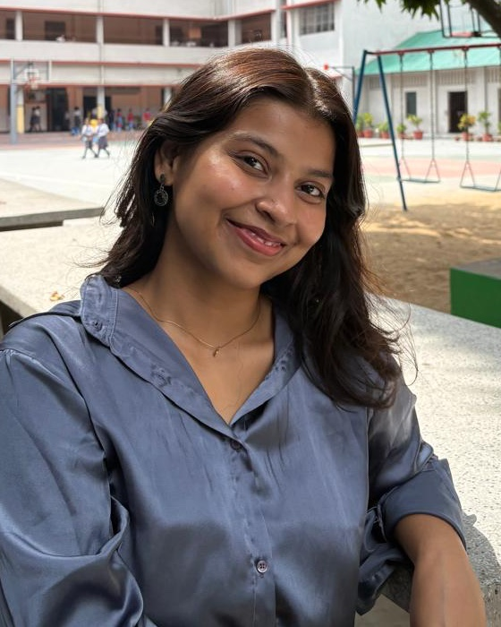

Winners & Best Memorial
XV M.K. Nambyar Memorial National Level Moot Court Competition
2025
Law student at Symbiosis Law School, Noida
8.52 CGPA out of 10

Hey, I'm Aastha
I am drawn to the places where law meets people: legal research, public policy and socio-legal issues.
I'm studying for a BBA LLB at Symbiosis Law School, Noida. My internships have taken me from the chambers of Supreme Court judges to the district court in Patna, and from commercial litigation to civil liberties fieldwork.
Along the way I have drafted petitions, briefed special leave matters and conducted ground interviews. I like work that is rigorous, evidence-led and useful.
Connect on LinkedInJudicial Intern · Supreme Court of India
Preparing briefs on civil, criminal, transfer and special leave petitions, and assisting in the review of case records and court proceedings.
Human Rights Intern · OSTI
Researched human rights violations and took part in expert sessions. Won the closing Declamation Competition for a presentation on the Rights of Persons with Disabilities.
Judicial Intern · Supreme Court of India
Prepared notes on the facts and grounds of civil and criminal transfer petitions, briefed special leave petitions, and assisted in reviewing case records and court proceedings.
Intern · New Delhi
Assisted in defamation and commercial litigation, with research on maintainability, jurisdiction and procedural compliance.
Intern · New Delhi
Worked on maintainability of claims and counterclaims, compliance with pre-arbitral contractual mechanisms and procedural timelines. Received a letter of recommendation from Advocate Bibhuti Krishna for drafting various petitions.
Intern · Jaipur
Interned directly under National President Dr. Kavita Srivastava. Made court visits, attended seminars and protests, took ground interviews, conducted research and prepared short notes.
Intern · Patna District Court
Assisted in drafting pleadings and applications in civil and criminal matters.
Winners & Best Memorial
2025
Winners
2025 · Bengaluru, Karnataka
Runners-Up & Best Memorial
2024 · Tamil Nadu Dr. Ambedkar Law University
Top 4 Written Submissions
2025 · Out of 95 teams
Member of the Moot Court Society, May 2024 – June 2026. Organising Committee member for the 1st Symbiosis Moot Court Competition and the ASCENT Moot Court Competition.
Conference paper
Presented at the 15th International Conference on Human Rights and Gender Justice.
Published article
Published in The Geostrata.
Certifications
On campus